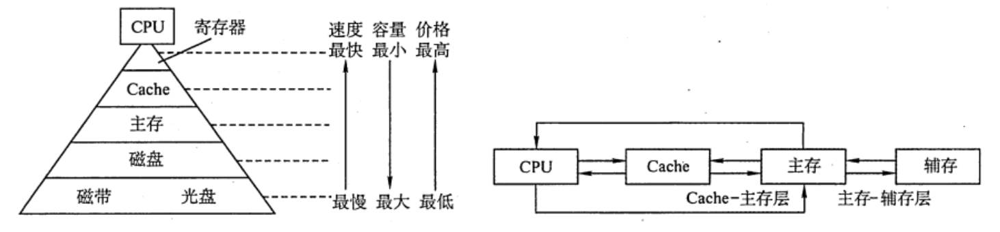

2022.04.24
| 类别 | 容量 | 存取速度 | 价格 |
|---|---|---|---|
| 主存储器（主存） | 小 | 较快 | 较高 |
| 辅助存储器（辅存） | 大 | 慢 | 低 |
| 高速缓冲存储器（Cache） | 小 | 与CPU匹配 | 高 |
磁表面存储器（磁盘、磁带）
磁芯存储器
半导体存储器（MOS型存储器、双极型存储器）
光存储器（光盘💿）
按存取方式分类
随机存储器（RAM，Random Access Memory）：读写任意位置存储单元所需的时间都相同；主要用作主存、Cache
只读存储器（ROM，Read-Only Memory）：
⚠️BIOS芯片，用于开机时装在操作系统，虽然是ROM芯片，但是也算在主存的一部分
⚠️很多ROM也可以写！
⚠️闪存写的速度比读的更慢
⚠️很多ROM也具有“随机存储”特性！
MROM（掩模式只读存储器）
厂家按照客户需求，在芯片生产过程中写入信息，之后人个人不可重写（只能读出），可靠性高、灵活性差、生产周期长、只适合批量定制
用户可使用专门的PROM写入器写入信息，写入以后就不可更改
允许用户写入信息，之后用某种方法擦除数据，可进行多次重写
UVEPROM
用紫外线照射8-20分钟，撒出所有信息
EEPROM
可用“电擦出”，擦出固定的字
Flash Memory（如U盘、SD卡）
有EEPROM发展而来，断电后也能保存信息，可以进行多次快速擦出重写，写比读更慢。另外闪存每个存储元只需要一个MOS管，位密度高。
有控制单元+存储单元（Flash芯片）构成，可进行多次快速擦出重写，SSD速度快、功耗低、价格高。
相联存储器（CAM, Associative Memory / Content Addressed Memory）: 可以按照内容访问的存储器，按照内容检索到储存位置进行读写，“块表”就是一种相联存储器
按信息可保存性分类
易失性存储器，如RAM
存储容量 $$ 存储容量 = 存储字数\cdot 字长 $$ 如：1Mx8位
单位成本 $$ 单位成本 = 总成本 / 总容量 $$
存储速度 $$ 数据传输率(主存带宽) = 数据的宽度 / 存储周期 $$ 存取时间：启动存储器到完成操作的时间 = 读出时间+写入时间
存取周期：完成的一次读写操作需要的全部时间，两个独立访问存储器操作之间所需的最小时间间隔
主存带宽：每秒从主存进出的信息的最大数量（字/秒，字节/秒，位/秒）
对于破坏性读出的存储器：存取周期 = 存取时间+恢复时间
【答案】:$16MB/32bit2=2^{23}$⚠️半字寻址*

1.多级存储系统是为了降低存储成本
2.虚拟存储器中主存和辅存之间的数据调动对任何程序员是透明的
3.CPU只能与Cache直接交换信息，CPU与主存交换信息也需要经过Cache
A. 仅I
B. 仅I和II
C. I、II和III
D. 仅II
【答案】：A，主存和辅存之间的数据调动是由硬件和操作系统共同完成的，仅对应用级程序员透明。CPU与主存可直接交换信息。
⚠️同时访问两级存储器还是分别访问！ $$ \begin{align} 12 &= 0.9\cdot 5+0.1*n\ n &= 75 \end{align} $$
1)Cache/主存系统的效率是多少；
2)平均访问时间是多少。
命中率：$1900/(1900+100)=0.95$
$效率=\frac{访问Cache时间}{平均访问时间}=\frac{1\times 50}{0.95\times 50+0.05\times250}=\frac{1}{0.95+0.05\times250/50}=83.3\%$
平均访问时间：50/0.833=60ns